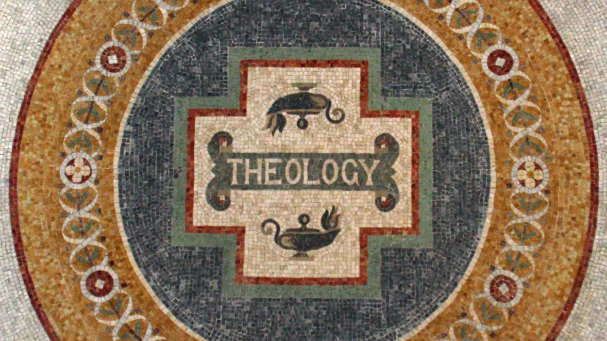

목차
- 9/1
- 9/2
- 9/3
- 9/4
9/1 성경수업이다

Introduction
1. What is Theology? (Study of God)
- The etymology of the word “theology” comes
from the Latin word theologia, which is derived
from the Greek words theos (“God”) and logos
(“word, language, discourse, study”). Theology
can be used to describe any study of God. We
are looking particularly at the Christian study
of God or the study of the Christian God.
- (God) Theos + (study) Logos ⇒ Study of God
- The science which studies God and all that
relates to him, including religion and morals.
- Morality and ehtics are only possible when we believe that there is no god(the judge)
Christian Theology has many branches
- Ascetical (dealing with training in virtue)
- Dogmatic (the formulation of doctrine)
- Moral (the behavior of man in the light of his final destiny)
- Mystical (contemplation of union with God)
- Natural (in which God is known by the light of human reason alone)
- Pastoral (dealing with the care of souls)
- Positive (dealing with revealed truth)”